An open firm-level model for UK VAT threshold reform
Abstract.
I present an open firm-level microsimulation for transparent, conditional costing of UK VAT registration-threshold reforms. The model generates a weighted accounting population from public aggregates; it does not recover administrative microdata or firm behaviour. On a common 2023–24 baseline, I apply level, shape (a taper), and rate (a reduced-rate band) scenarios and report their mechanical revenue effects. I characterise the notch by its model-implied dominated region—a £21,250 band above the £85,000 threshold—and show how each schedule changes it. Intensive-margin results are sensitivity exercises conditional on a region-confined response model and assumed elasticities; the extensive margin is not identified. The near-threshold shape is target-inherited, and specification diagnostics show that the synthetic data cannot support bunching inference. The exercise therefore supplies reproducible policy scenarios and a general warning: calibrated synthetic data cannot create behavioural or sub-band fiscal information absent from their targets and maintained assumptions.
Keywords: value-added tax, microsimulation, tax notch, policy
The United Kingdom’s Value Added Tax (VAT) applies above a registration threshold that is the highest in the OECD alongside Switzerland (Seely 2024; HM Revenue and Customs 2024). The threshold is a notch rather than a kink: once a firm’s annual taxable turnover crosses it, VAT falls due on the firm’s whole base, not only on the part above the threshold, so registration produces a discrete jump in liability rather than a marginal one. The threshold falls in a dense part of the firm distribution. Figure 1(a) shows that VAT- and PAYE-registered UK businesses are concentrated at the lower end of the turnover distribution, and Figure 1(b) shows that the VAT-registered population per £1,000 of turnover is densest at and below the threshold, so the notch applies to a large number of firms.
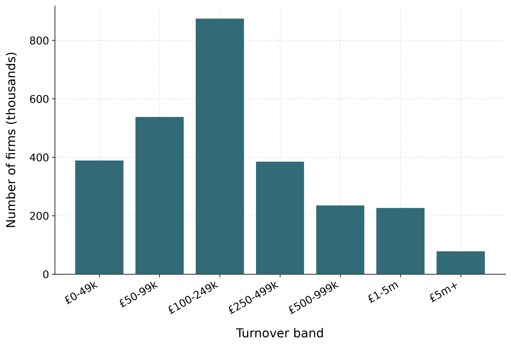
VAT- and/or PAYE-registered businesses (ONS, 2023–24)
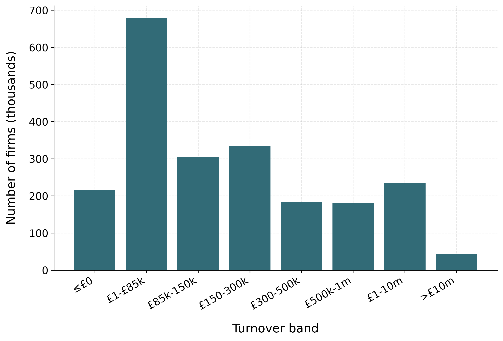
VAT-registered firms (HMRC, 2023–24)
Firms respond to the notch by locating below the threshold. Tabulations of HMRC turnover data show the number of firms rising towards £84,000 and then dropping sharply at the £85,000 threshold, leaving excess mass just below it (Office for Budget Responsibility 2023). Liu et al. (2021) document this bunching in UK administrative firm data over 2004–05 to 2014–15, when the threshold rose from £58,000 to £81,000, and Liu et al. (2024) find that firms slow their turnover growth as they approach the threshold. The notch therefore distorts the size distribution and the growth decisions of firms near the margin, which places the threshold under recurrent pressure for reform.
Reform proposals change the threshold in one of three ways: its level (raising or lowering it), its shape (replacing the notch with a schedule that phases the rate in over a band), or its rate (a reduced rate for firms in a band above the threshold). The three are not equivalent. Changing the level moves the notch along the turnover axis; changing the shape or the rate alters the size of the discrete jump itself. Costing the three on a common basis is the practical difficulty this paper addresses. A change in the level can be costed by mechanical accounting, but a change in the shape of the schedule cannot be evaluated with the reduced-form bunching methods used to study the threshold, because a continuous schedule leaves no single point of excess mass to exploit. The firm-level data needed to study turnover near the threshold is, in addition, not available in open form.
In this paper I build an open firm-level accounting microsimulation for conditional costing of UK VAT threshold reforms on a common static basis. I construct weighted synthetic firm records calibrated to published official aggregates—HMRC registered-firm counts by turnover band and by sector, net VAT liability by turnover band, and ONS business counts and employment bands—for the 2023–24 tax year, when the threshold was £85,000, and separately for 2024–25, when it rose to £90,000. These are not reconstructed administrative records: turnover and liability within published bands are simulated under explicit assumptions. The released code permits those assumptions and counterfactual schedules to be changed and audited.
On these data I do four things. First, I cost level reforms and schedule reforms—a graduated taper and a reduced-rate band—statically, by applying each counterfactual schedule mechanically to the firm distribution. Second, I characterise the notch’s distortion through its dominated region—the exact, elasticity-free range of turnover above the threshold in which no firm profits from locating—and how each reform changes it. Third, I price the level and rate reforms behaviourally: each firm re-optimises its turnover within its schedule region, conditional on an assumed turnover elasticity \(e\) that the data do not identify, reported as an \(e\)-sensitivity range that nests the static costing exactly in its \(e\to0\) limit. Fourth, I show that the synthetic data’s near-threshold structure is target-inherited and cannot support bunching inference: the £85,000 profile is calibrated to the OBR’s published £1,000-band data and the generator contains no location-choice mechanism.
Four findings follow. First, the static pipeline prices all reforms on a common basis, but its anchor is a consistency check rather than a validation. The mechanical 2025–26 cost of the April 2024 increase from £85,000 to £90,000 is £364m if every released firm deregisters and £207m if 43% of released-firm liability is retained, against HMRC’s published £185m (HM Treasury 2024). Both conventions reproduce the official profile’s narrowing and its 2028–29 sign change, but the level gap shows that registration dynamics and population scope matter (Section 4). Direct mechanical moves from the £90,000 base range from a gain of about £1.46bn at £70,000 to a cost of about £1.55bn at £120,000, against a base of about £190.8bn in 2025–26.
Second, the shape and rate reforms act on the notch’s distortion in a way that a change in level does not. The baseline notch creates a £21,250 dominated region above the threshold, containing about 157,000 weighted firms in the synthetic population. Raising the threshold relocates this region; a banded reduced rate splits it across two notches; only the continuous taper removes it. On the common £85,000 data-year base, raising the threshold to £100,000 costs £876m, the taper costs £1,525m over its £85,000–£141,667 band—removing the dominated region requires relief that wide (Section 6)—and the 10% and 15% reduced rates cost £515m and £258m. These comparisons index the model-implied location distortion and omit compliance-cost savings (Section 8).
Third, conditional on the assumed elasticity, intensive-margin responses barely move these costings. A pure level rise has exactly zero intensive-margin revenue offset in this model. At \(e=0.17\), the 10% band’s cost falls from £515m to £505m and the 15% band’s from £258m to £250m. The important uncertainty is registration and location choice at the notch, exactly the margin the synthetic data cannot identify.
Fourth, the open data carry a transparency lesson about bunching. The 2023–24 population is calibrated to the OBR’s published £1,000-band profile (Office for Budget Responsibility 2023), so its baseline excess mass (\(E=10{,}418\)) is target inheritance, not behavioural evidence. The estimate is highly sensitive to degree and window, and the fitted missing mass is zero in the headline specification. The synthetic data therefore cannot validate the estimator or identify behaviour. The behavioural evidence remains the administrative-data work of Liu et al. (2021).
The paper draws on four strands of work. The first is the methodology of bunching and notches (Chetty et al. 2011; Saez 2010; Kleven and Waseem 2013; Kleven 2016; Best et al. 2015), which provides the analytic notion of a dominated region; I use the dominated region to characterise a distortion that leaves no single point of excess mass to exploit. Recent evidence from a Finnish payroll-tax notch shows that a policy threshold can impede mobility and firm growth well beyond the immediate cutoff and can bias conventional difference-in-differences comparisons (Jysmä et al. 2026). That result strengthens the case for treating my local dominated-region metric as partial: its payroll and employment setting does not identify the response to the UK VAT turnover threshold, but it demonstrates the potentially wider dynamic margin that this accounting model omits.
The second is the empirical literature on VAT registration thresholds (Liu et al. 2021, 2024; Onji 2009; Harju et al. 2019; Asatryan and Peichl 2017; Nandi and Warwick 2020; Bashir et al. 2024). Liu et al. (2021) is closest: it estimates bunching at the UK notch on administrative data over 2004–2014 and documents voluntary registration; I take its estimates as the established behavioural facts and cost shape and rate reforms statically on a common basis, which that literature does not do. The international evidence (Harju et al. 2019; Onji 2009; Asatryan and Peichl 2017; Nandi and Warwick 2020) notes that bunching at a VAT threshold can reflect compliance costs, firm-splitting, or reporting rather than real turnover responses.
The third strand questions whether bunching identifies a structural elasticity. Blomquist et al. (2021) show that it is not non-parametrically identified at a kink or notch without strong functional-form assumptions; Bertanha et al. (2023) develop the notch case. I therefore do not infer an elasticity from the synthetic data. The fourth strand is the structural literature on size-based thresholds (Garicano et al. 2016; Gourio and Roys 2014); the present paper makes no comparable structural claim.
This paper makes three contributions. First, it provides an open and auditable firm-level accounting microsimulation for conditional VAT-threshold scenarios, where the existing behavioural evidence rests on restricted administrative data. Second, it characterises the notch through its model-implied dominated region and costs two schedule reforms—a graduated taper and a reduced-rate band—on the same static basis as level reforms. Third, it demonstrates that band-calibrated synthetic data carry no sub-band information beyond their targets and distributional assumptions. All fiscal estimates below should therefore be read as conditional scenario outputs, not point forecasts with administrative-data precision. Identifying the turnover elasticity from administrative microdata, welfare accounting, revenue-neutral designs, and an explicit model of voluntary registration are left for future work.
The remainder of the paper proceeds as follows. Section 2 describes the institutional background of the UK VAT threshold. Section 3 sets out the synthetic firm microdata and its calibration to official aggregates. Section 4 sets out the static costing of threshold changes and the schedule reforms. Section 5 shows that the synthetic data contain no usable behavioural bunching signal. Section 6 develops the notch and its exact dominated region, and shows how each reform changes it. Section 7 prices the reforms behaviourally, conditional on an assumed elasticity, and derives the level-rise invariance. Section 8 concludes.
The United Kingdom levies a value-added tax at a standard rate of 20% on most goods and services. A business must register once its taxable turnover over any rolling twelve-month period exceeds the registration threshold, after which it charges VAT on its taxable sales and reclaims VAT paid on inputs. Because registration makes VAT due on the firm’s entire taxable turnover rather than only the amount above the cutoff, the threshold is a notch—a discrete jump in liability—and not a kink. The cost of crossing is largest for consumer-facing firms with limited pass-through and small reclaimable input shares, for whom the incentive is to restrain turnover and locate just below the threshold (Liu et al. 2021; Kleven and Waseem 2013).
Real VAT is a tax on value added, not on turnover: a registered firm charges output VAT on its sales but reclaims input VAT on its purchases. The model reflects this: each synthetic firm’s net liability is the standard rate applied to its value added (Section 3), and under the value-added formulation—in which unregistered firms bear no unreclaimed input VAT—the notch’s dominated region is invariant to the firm’s input share (Section 6). Two features of the real system remain outside the model’s scope. A large share of below-threshold firms register voluntarily—roughly \(43\%\) of eligible below-threshold firms (Liu et al. 2021), driven by input-VAT reclaim and business-to-business sales—and for them the threshold carries no bunching incentive; voluntary registration enters the model only as a registration-rate parameter and a retention sensitivity, not as a choice. And net-repayment traders (zero-rated exporters and similar, HMRC’s negative-liability column) are not represented, because the public aggregates do not resolve rated structure by turnover band.
The registration threshold was held at £85,000 from 1 April 2017 to 31 March 2024—a seven-year nominal freeze, the longest in the history of the tax—before being raised to £90,000 on 1 April 2024, with the deregistration threshold rising from £83,000 to £88,000 (HM Revenue and Customs 2024; Seely 2024). Because nominal turnover grows with inflation and real activity, freezing the threshold lowers it in real terms and draws an increasing number of firms towards the registration margin; this fiscal-drag mechanism was a central motivation for the April 2024 increase. My data year is 2023–24, so the prevailing statutory threshold throughout my analysis is £85,000. Figure 2 shows the pattern in the turnover distribution: the number of firms rises towards £84,000 and falls sharply above £85,000, and the projected 2025–26 distribution is more sharply bunched than the 2019–20 outturn as fiscal drag draws more firms towards the frozen threshold.
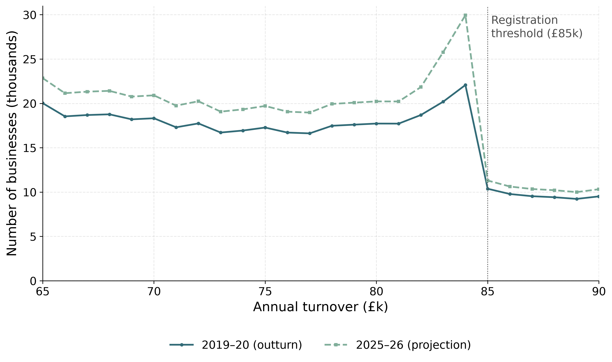
The UK threshold is the highest in the OECD alongside Switzerland (HM Revenue and Customs 2024), and there is debate over whether to raise it—to reduce the compliance burden on small firms—or lower it, to broaden the base and reduce the growth distortion at the margin. Three families of reform feature, and I evaluate all three: a change in the threshold’s level (the £85,000 to £90,000 increase of April 2024 and further moves around it); a change in its shape (a graduated taper that phases the effective rate in over a band, replacing the notch with a continuous profile); and a change in its rate (a reduced rate for small firms in a band above the threshold, with the standard 20% rate retained above). The taper and reduced-rate designs follow proposals in the UK policy debate: Office of Tax Simplification (2017) canvassed a financial incentive or reduced effective rate to smooth the cliff-edge at the threshold, and HM Treasury’s call for evidence on the registration threshold examined smoothing mechanisms in the same family (HM Treasury 2018). The European Union ran a closely related “graduated relief” scheme for small enterprises and abolished it from January 2025 on complexity grounds, in favour of a simple exemption with a transition tolerance (Council of the European Union 2020)—relevant precedent for the administrability of taper-style designs. A banded reduced rate introduces a smaller secondary notch at the band top, which the continuous taper avoids. I cost all three by the same machinery in Section 4.
Studying firm responses at the threshold needs firm-level turnover near the cutoff, which the official statistics publish only in coarse turnover bands. I therefore build a synthetic firm population calibrated to those aggregates: it reproduces selected official totals while supplying explicitly simulated within-band records for accounting exercises. These records are not estimates of the confidential firms that the authorities do not release. The same calibrate-to-published-aggregates approach underlies open household-level tax-benefit microsimulation (PolicyEngine 2025); here I apply it at the firm level. The generator takes the registration threshold as a parameter and is documented in Appendix 9.1; I build one population for 2023–24 (threshold £85,000), the paper’s primary data year, and one for 2024–25 (threshold £90,000), used for the forward sweep of Section 4.
The archived CSV inputs in this repository remain the reproduction source for the paper’s reported numbers; a pinned migration snapshot also represents the same numeric target surface through PolicyEngine Ledger and the experimental Populace firm generator, and Appendix 9.1 reports the parity check between that shared source-of-truth path and the paper inputs.
Index firms by \(i\). For each sector \(s\) and ONS turnover band \(b=[\underline{b},\overline{b})\), the UK Business: Activity, Size and Location table gives a business count \(N_{s,b}\), and I draw \(N_{s,b}\) firms with within-band turnover \[y_i \;=\; \underline{b} + (\overline{b}-\underline{b})\,u_i, \qquad u_i \sim \operatorname{Uniform}(0,1),\] so every draw remains inside its published source band. This maximum-entropy allocation is a maintained assumption, not an observed within-band distribution; importantly, it does not force density to zero at every published band boundary. I interpret integer-labelled bands as contiguous half-open intervals: for example, the published “50–99” band is represented as \([50,100)\) thousand pounds. The ONS register covers businesses registered for VAT and/or PAYE—about 2.7 million—so the synthetic population represents that registered-business frame, not the full business population of roughly 5.6 million in the DBT business population estimates; the difference is concentrated below the threshold and matters for threshold cuts, which I flag where relevant. Each firm is given input expenditure \(x_i = \rho_i\,y_i\), with the input–output ratio \(\rho_i\) drawn from a rescaled Beta distribution with sector-specific shifts, clamped to \(\rho_i \in [0.1, 0.95]\) (mean about 0.6, so value added averages about 40% of turnover, in line with the UK non-financial business economy). Its net VAT liability is the standard rate applied to its value added, \[v_i \;=\; \tau\,(y_i - x_i), \qquad \tau = 0.20,\] so every firm’s net rate \(v_i/y_i = \tau(1-\rho_i)\) lies in \([1\%, 18\%]\), strictly positive and below the statutory cap of 20%. The model therefore abstracts from net-repayment traders (firms with zero-rated outputs whose input reclaim exceeds output VAT—HMRC’s negative-liability column); representing them requires rated-structure detail (zero, reduced, and exempt output shares) that the public aggregates do not resolve by band. Employment is assigned from the ONS employment-band shares conditional on each firm’s sector, and the same assignment is retained through calibration and final output. Appendix 9.1 records the model and data provenance relevant to replication.
The base population reproduces the ONS structure but not the HMRC VAT-registered totals, so I re-weight it. Each firm receives a strictly positive weight \(w_i = e^{\theta_i}\), and for a vector of official targets \(T=(T_k)_{k=1}^{K}\) the weighted synthetic counterpart of target \(k\) is \[\widehat{T}_k(\theta) \;=\; \sum_i a_{ki}\, w_i ,\] where \(a_{ki}\) is firm \(i\)’s contribution to target \(k\): an indicator of band or employment membership for a count target, the expected registration propensity times a sector indicator for HMRC registered-sector counts, and the firm’s net liability \(v_i\) for a VAT-liability target. Registration propensity equals one above the threshold and the HMRC voluntary-registration share below it. I choose \(\theta\) to minimise a symmetric relative-error loss with per-target importance weights \(\lambda_k\), \[L(\theta) \;=\; \frac{1}{K}\sum_{k} \lambda_k \min\!\Big\{ \big(\widehat{T}_k/T_k - 1\big)^2,\; \big(T_k/\widehat{T}_k - 1\big)^2 \Big\} \;+\; \frac{\alpha}{N}\sum_i \lvert \theta_i \rvert ,\] the final term a mean absolute penalty on the log-weights. The targets are the HMRC VAT-registered counts by turnover band and by sector, the HMRC net VAT liability by turnover band, the ONS employment-band totals, and—for the 2023–24 vintage—the OBR’s published near-threshold profile. Chart C of the March 2023 Economic and Fiscal Outlook reports HMRC business counts in £1,000 turnover bands from £65,000 to £90,000 (Office for Budget Responsibility 2023). I interpolate these counts to 2023–24 between the 2019–20 outturn and the OBR’s 2025–26 frozen-threshold projection. The final £90,000 row lies beyond the fine window and is not used.
All 25 retained bins enter as shape targets. I apply them separately on each side of the threshold: the below-threshold profile is normalised over £65,000–£85,000 and the above-threshold profile over £85,000–£90,000. Each is then scaled to the synthetic population’s mass in its respective window. Chart C counts HMRC traders, a different unit and, below the threshold, a substantially narrower population than the ONS business frame, so its levels are not imported on either side. An earlier build that mixed conventions (direct counts above the threshold, frame-scaled shape below) placed more mass just above the threshold than just below it, inverting the administrative profile’s cross-threshold ordering; under side-consistent scaling the cross-threshold step comes from the frame’s own band structure and the OBR data supply only the within-side geometry—the rise into the threshold and the decline beyond it. These fine targets pin the near-threshold density to the OBR profile’s within-side geometry at frame-implied levels—the region that coarse bands alone leave to the weight optimiser (Section 5); the resulting cross-threshold step (\(-25\%\)) is about half the OBR chart’s own (\(-60\%\)), because the chart’s below-threshold universe is narrower than the frame. No fine bands are published for the £90,000 threshold era, so the 2024–25 vintage keeps coarse bands only. Turnover-band and near-threshold targets carry the largest \(\lambda_k\), followed by VAT liability by band. Two liability dimensions are reported as informational diagnostics but excluded from the optimizer. VAT liability by sector is excluded because the generator draws a common input-share distribution with sector shifts rather than calibrating the input/output tax structure by sector. The below-threshold liability band (£1–threshold, £1.46bn in 2023–24) is excluded because that total is remitted by voluntary registrants—input-reclaim traders averaging about £2,150 of net remittance—whom the model’s standard-rate-on-value-added liability does not represent (Section 2); imposing it on the whole below-threshold population would force the optimiser to suppress weights in the £50,000–£85,000 region, distorting the near-threshold shape the fine targets exist to pin. The problem is solved by gradient descent, and the symmetric loss keeps targets of very different magnitudes on a common scale.
A firm is registered with certainty when its data-year turnover exceeds the threshold \(T^{*}\). This is an approximation to the statutory test, which is a rolling 12-month test on taxable turnover with a roughly two-month registration lag, a forward-looking 30-day test, and an exception for temporary breaches (Section 2); the model also registers firms whose turnover is largely exempt, whom the law would not require to register. For a single-year cross-section calibrated to registered-population totals these timing and composition wedges are second order for the aggregates, but they are worth naming: the HMRC band tables classify traders by total declared outputs (VAT-return Box 6), and the ONS turnover measure is likewise total turnover, so the running variable throughout is total rather than taxable turnover. Below the threshold, candidate firms are placed in a seeded random order and selected until their cumulative calibration weight reaches the HMRC count \(M\) of registered firms in the £1–threshold band. This matches the weighted total to within one firm’s weight but does not identify which firms register voluntarily; their composition remains a modelling assumption. The resulting dataset comprises approximately \(2.94\) million firm records per vintage, weighted to represent roughly \(2.5\) million registered businesses. Checked against the official sources along every calibrated dimension, the vintages attain overall calibration accuracies of 92.9% (2023–24) and 93.5% (2024–25), with calibrated-dimension scores ranging from 88.3% to 97.3%; Appendix 9.1 reports the full table. The headline is the mean of five calibrated-dimension scores, each clipped at zero as \(\max\{0,1-\lvert \widehat{T}-T\rvert/\lvert T\rvert\}\); it excludes the VAT-liability-by-sector diagnostic described above.
Aggregate fit does not imply record-level representativeness. Kish effective sample sizes are 92,326 (3.1% of rows) and 188,612 (6.4%), while maximum weights are about 2,598 and 1,775. Synthetic rows should therefore be read as weighted accounting support points, not independent firm observations; local and sub-band results can be sensitive to a small number of high-weight records. I report rounded scenario estimates and expose the full weight diagnostics in the generated calibration report.
My primary data year is 2023–24, when the statutory threshold was £85,000. The HMRC band targets step down across the threshold—678,350 firms in the £1–£85,000 band against 305,320 in £85,000–£150,000, or roughly \(8{,}000\) against \(4{,}700\) firms per £1,000 of band width—and the calibrated population necessarily inherits that band-average step. The local shape within a few thousand pounds of the threshold is pinned by the OBR near-threshold targets described above: the calibrated density rises into the threshold (about \(13{,}800\) firms per £1,000 in the £84,000–£85,000 bin), steps down across it (about \(10{,}300\) just above), and declines through the band—the administratively observed bunching geometry (Office for Budget Responsibility 2023; Liu et al. 2021), present in the file because it is targeted, not because any synthetic firm chooses it. In an earlier build without these targets the local shape was an unpinned optimiser equilibrium (and, under the pre-correction liability scale, a spurious bunching look-alike); the central data caveat of the paper stands in all three configurations: no sub-band feature of band-calibrated synthetic data carries behavioural information beyond what its targets put there (Section 5 quantifies the resulting specification sensitivity). Counterfactual policies—including the £85,000 to £90,000 reform and the forward threshold sweep of Section 4—are evaluated on these firms by re-applying the registration rule to the microdata for the static costings, holding the empirical turnover distribution fixed. A behavioural layer that re-prices firms under counterfactual schedules, conditional on an assumed turnover elasticity, is developed in Section 7.
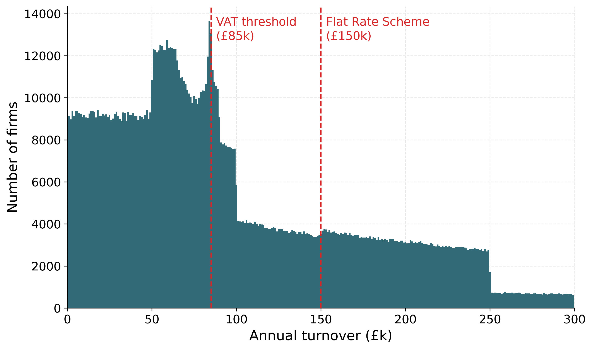
A static costing measures the first-order revenue effect of a reform by re-applying the tax rule to a fixed firm population, with no behavioural response. Let firm \(i\) have turnover \(y_i\), calibrated net VAT liability \(v_i = \tau(y_i - x_i)\) (Section 3), and weight \(w_i\). A firm remits VAT only once registered, which the model equates with turnover above the threshold \(T\), so total VAT revenue at threshold \(T\) is the weighted sum of liabilities over registered firms, \[R(T) \;=\; \sum_i w_i\, v_i \,\mathbf{1}\{y_i \ge T\}.\] Two scope conventions follow from this formula and are worth stating. First, below-threshold voluntary registrants’ remittances (a £1.46bn HMRC target in 2023–24) are outside \(R(T)\), so a threshold cut credits the full liability of newly covered firms even though roughly 43% of below-threshold firms would already be registered voluntarily (Liu et al. 2021). Second, and symmetrically, the headline treats every firm released by a threshold rise as deregistering; the anchor comparison below reports the voluntary-retention sensitivity. Because turnover is held fixed, moving the threshold from \(T_0\) to \(T\) changes revenue only through the firms whose registration status flips: \[\Delta R \;=\; R(T) - R(T_0) \;=\; -\,\operatorname{sign}(T - T_0) \sum_i w_i\, v_i \,\mathbf{1}\{\,T_{\min} \le y_i < T_{\max}\,\},\] where \(T_{\min}=\min(T,T_0)\) and \(T_{\max}=\max(T,T_0)\): lowering the threshold draws firms into the net and raises revenue, while raising it releases firms and loses revenue. The estimate is the mechanical reclassification effect and excludes the behavioural response of Section 7. I age the microdata to a given fiscal year by a cumulative nominal-growth factor; band membership is evaluated on data-year turnover against each year’s nominal thresholds, and only liabilities are aged—an approximation stated because a fully aged band would shift membership toward the pinned near-threshold density. At the £90,000 threshold this puts total VAT revenue at £190.8bn in 2025–26 and £195.7bn in 2026–27.1
I compare the static pipeline against HMRC’s costing of the April 2024 increase from £85,000 to £90,000, announced and costed at Spring Budget 2024 (HM Treasury 2024). The comparison requires the costing baseline convention: the official pre-measure baseline is not a frozen £85,000 threshold but a counterfactual path in which the freeze legislated to March 2026 ends and the threshold resumes uprating (85, 85, 87, 89, 92 thousand pounds over 2024–25 to 2028–29 in the model’s implementation), so the measure’s impact shrinks over the forecast and changes sign in 2028–29, when the counterfactual threshold overtakes £90,000. The official profile is \(-\)150, \(-\)185, \(-\)125, \(-\)50, \(+\)65 £m. My mechanical costing depends on the deregistration convention. If every released firm deregisters, the model gives \(-\)357, \(-\)364, \(-\)224, \(-\)78, \(+\)119: it reproduces the sign, the narrowing profile, and the 2028–29 turning point, but overshoots the official magnitudes throughout (\(-\)357 against \(-\)150 in 2024–25; \(-\)364 against \(-\)185 in 2025–26). If instead the Liu et al. (2021) voluntary-registration share (43%) of released-firm liability is retained, the model gives \(-\)203, \(-\)207, \(-\)128, \(-\)44, \(+\)68. The convention narrows the gap but does not deliver a close level match in the first two years; it is close in 2027–28 and 2028–29 (Figure 4). That is the honest reading of the anchor: the official costing embeds a phased registration response (HMRC expected roughly 28,000 fewer registrants in the first year, against about 54,000 firms in the released band here, now pinned by the OBR fine-band targets), so the full-deregistration convention overshoots throughout. Because my microdata are calibrated to HMRC VAT aggregates, even a close match would confirm internal consistency rather than out-of-sample accuracy. The remaining gap reflects more than voluntary retention, including the official costing’s phased registration response and differences in population scope. The retention share is itself a convention: LLAT’s roughly \(43\%\) is a firm share among all below-threshold eligibles, applied here as a liability share among just-released firms.
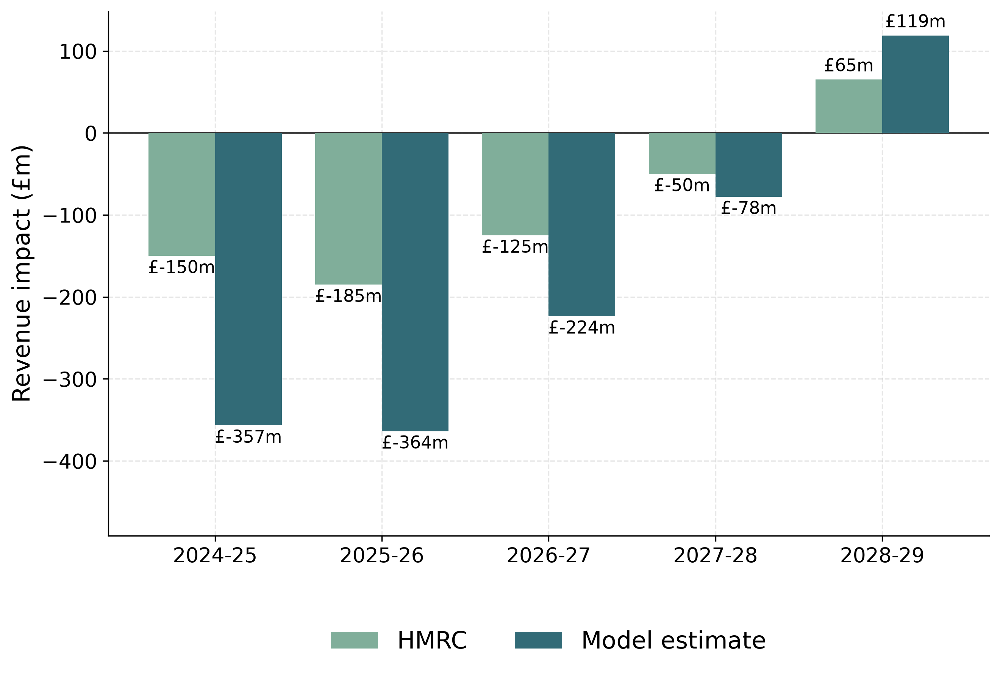
I next cost a menu of further threshold locations, taking the post-reform £90,000 threshold as the baseline. This sweep runs on the 2024–25 vintage population (Section 3), whose liability-by-band calibration is the marginally stronger of the two (97.1% against 96.5%; overall scores are 93.5% and 92.9%). Each row of Table 1 costs a move of the threshold to a new location for 2025–26, holding the turnover distribution fixed, so the revenue change reflects only the reclassification of firms into or out of the VAT net. Because the optimiser determines the within-band shape near the threshold (Section 3), the resulting local costings remain conditional on that synthetic within-band allocation. Lowering the threshold draws firms in and raises revenue; raising it loses revenue; the threshold-cut rows inherit the registered-business frame, so they omit currently unregistered businesses that a lower threshold would newly cover. The sweep is asymmetric around the baseline. A £30,000 rise to £120,000 costs about £1.55bn, 0.81% of the £190.8bn base, because the threshold governs many small firms whose individual liabilities are small. Figure 5 shows the sweep graphically. These are static results: they bound the first-order fiscal effect of a threshold change but abstract from the behavioural response of Section 7.
| Threshold | Revenue change (£m) | Change (%) | VAT-paying firms (000s) |
|---|---|---|---|
| £70,000 | \(+1{,}456.5\) | \(+0.76\) | \(+227.1\) |
| £75,000 | \(+1{,}125.8\) | \(+0.59\) | \(+170.1\) |
| £80,000 | \(+769.4\) | \(+0.40\) | \(+113.0\) |
| £85,000 | \(+394.2\) | \(+0.21\) | \(+56.2\) |
| £90,000 (baseline) | \(0\) | \(0\) | \(0\) |
| £95,000 | \(-413.8\) | \(-0.22\) | \(-55.9\) |
| £100,000 | \(-708.2\) | \(-0.37\) | \(-96.2\) |
| £105,000 | \(-1{,}007.4\) | \(-0.53\) | \(-135.3\) |
| £110,000 | \(-1{,}187.6\) | \(-0.62\) | \(-157.8\) |
| £115,000 | \(-1{,}369.1\) | \(-0.72\) | \(-179.6\) |
| £120,000 | \(-1{,}552.8\) | \(-0.81\) | \(-200.8\) |
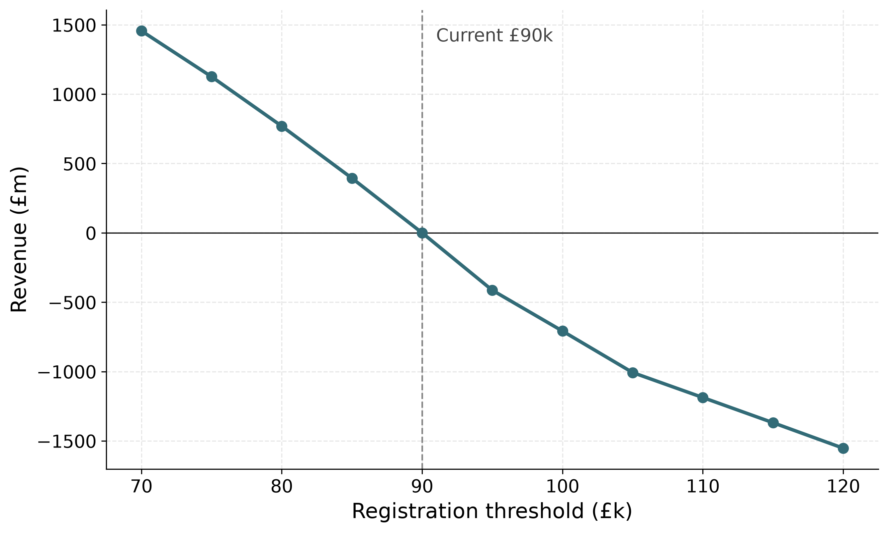
Revenue impact (£m)
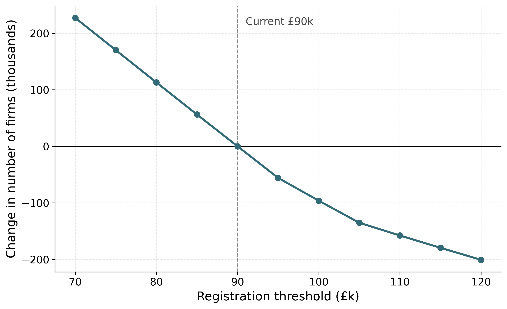
Change in VAT-paying firms (000s)
The threshold sweep above moves the location of a single cutoff. The same static principle—re-applying a tax rule to the fixed turnover distribution, with no behavioural response—also costs reforms that change the shape of the schedule rather than merely its position. I consider four reforms and report their first-order revenue effects against a common baseline: the £85,000-notch / £175.4bn 2023–24 base. (This 2023–24 data-year base differs from the £190.8bn figure in the sweep above, which runs on the 2024–25 vintage aged to 2025–26 at the post-reform £90,000 threshold; the schedule reforms are costed in the data year to match the bunching and dominated-region analysis. Both bases are theoretical-liability (VTTL-style) aggregates in the sense of the footnote above, not cash-receipts lines.) For each reform I recompute the weighted sum of liabilities \(R = \sum_i w_i\, v_i\) under the new schedule, holding each firm’s turnover fixed, and difference it against the baseline.
Raising the threshold from £85,000 to £100,000 releases the firms with turnover in \([\unicode{xA3}85{,}000, \unicode{xA3}100{,}000)\)—about \(131{,}000\) firms—from the VAT net, for a static revenue change of \(-\)£876m on the common base. Because the released band lies above the data-year threshold, its liabilities are directly calibrated (and its lower reach pinned by the OBR fine-band targets), so the band is summed directly; the sweep’s smooth-counterfactual method, which irons out the near-threshold concentration by construction, gives \(-\)£700m and \(102{,}400\) firms—a gap that now measures the real, target-pinned concentration of firms just above the threshold rather than an optimiser artifact. On this common base the level move leaves the dominated region in place, relocating it to the new cutoff (Section 6) at a static cost of \(-\)£876m; the taper removes the dominated region entirely, at the menu’s largest static cost of \(-\)£1,525m, because removal forces its relief band out to £141,667 (Section 6). Which matters more depends on what the reader wants from the reform—the dominated-region metric indexes misallocation only, and Section 8 discusses what it omits.
A graduated taper replaces the discrete notch with a marginal remittance rate that phases linearly from \(0\%\) at £85,000 to \(100\%\) at the band top, so liability is the integral of the marginal rate and a firm’s effective rate rises continuously from \(0\%\) to the full \(20\%\) across the band. Keeping net revenue monotone while confining relief to the band pins the band top at \(T^{*}/(1-2\tau)=\unicode{xA3}141{,}667\): a taper reaching the full rate at £105,000 would push net revenue inside the band below its value at the threshold, recreating a dominated interval smoothly rather than at a cliff (Section 6). Firms in the band remit the tapered schedule on their (fixed) turnover; mechanically this reduces revenue by \(-\)£1,525m, with about \(290{,}600\) firms in the £85,000–£141,667 band facing a lower effective rate.
A banded reduced rate charges firms in the £85,000–£105,000 band a reduced rate \(\tau_{\text{low}}\in\{10\%,15\%\}\) in place of the standard \(20\%\), with \(20\%\) retained above £105,000. Statically this reduces revenue by \(-\)£515m at \(\tau_{\text{low}}=10\%\) and by \(-\)£258m at \(\tau_{\text{low}}=15\%\), again with about \(151{,}600\) firms in the band facing the lower rate.
| Reform | Lever | Static revenue (£m) |
|---|---|---|
| Raise threshold to £100,000 | Location | \(-876\) |
| Graduated taper $[85,141.7 | xt{k}]$ Shape ( | phase-in) \(-1{,}525\) |
| Reduced rate \(10\%\) $[85,105\ | text{k}]$ Rate (s | tep) \(-515\) |
| Reduced rate \(15\%\) $[85,105\ | text{k}]$ Rate (s | tep) \(-258\) |
These static figures bound the first-order fiscal effect of each reform but abstract from the behavioural response of Section 7. One feature of the shape reforms is not visible in a static costing: unlike a threshold move, which transports the notch to a new cutoff, the taper and the reduced rate change the size of the notch itself—the discrete drop in net revenue at the threshold and the empty band of turnover it induces. Quantifying that change requires the structural object I develop in Section 6, where I derive the notch’s dominated region and show analytically how each of these reforms alters it.
This section applies the polynomial counterfactual-density estimator of Chetty et al. (2011) and Kleven and Waseem (2013)—as applied to UK VAT data by Liu et al. (2021)—to the synthetic firm population. Its finding is about the data, not about firm behaviour: every sub-band feature of a band-calibrated synthetic population is exactly what its targets put there, and this section demonstrates the point using the 2023–24 population. Its near-threshold density is calibrated to the OBR’s published £1,000-band profile (Section 3), and the estimator reads that profile back as excess mass—target inheritance, not behaviour. The results establish the section’s transparency claim: band-calibrated synthetic data support no bunching inference in either direction, and any sub-band feature of such data should be traced to its calibration targets before it is read as economics. The behavioural evidence on UK VAT bunching remains the administrative estimate of Liu et al. (2021).
The section also documents a correction. An earlier draft of this paper reported an excess mass of \(8{,}712\) firms at £85,000 that appeared to “reproduce” the density step documented in administrative data. That excess mass was an artifact of a liability mis-scaling in the generator (net liability set to value added itself rather than the standard rate applied to value added, inflating per-firm liabilities roughly fivefold; Section 3, footnote), which distorted how the weight optimiser distributed mass near the threshold. Correcting the scaling removed the step entirely; the near-threshold profile is now supplied by the OBR targets instead, as published data rather than an optimiser side-effect.2 A plausible-looking, literature-adjacent bunching statistic was manufactured by an accounting bug in the data layer and survived until the liability accounting was audited. I report this openly because it is the sharpest available demonstration of the section’s thesis.
Following Liu et al. (2021), I group firms into fine turnover bins of £1,000 and estimate a counterfactual density—the distribution that would obtain absent the registration notch—by polynomial regression on bin counts, excluding a manipulation window around the threshold \(y^{*}\): \[c_j \;=\; \sum_{l=0}^{q} \beta_l \, (y_j)^{l} \;+\; \sum_{i \in [y^{*}_{-},\, y^{*}_{+}]} \gamma_i \, \mathbb{1}\{j = i\} \;+\; \varepsilon_j ,\] where \(c_j\) is the number of firms in bin \(j\), \(y_j\) is the distance of bin \(j\) from the threshold, \(q\) is the polynomial order, and \([y^{*}_{-},\,y^{*}_{+}]\) is the excluded window. The fitted polynomial is then projected into the excluded region to recover the counterfactual density \(g(y)\), with a mass-conservation restriction that locates the upper edge of the manipulation window endogenously (excess mass below the threshold must equal missing mass above it; Appendix 9.2). Excess bunching is the integrated difference between the observed and counterfactual densities just below the threshold, \[B(y^{*}) \;=\; \int_{y^{*}-\Delta y^{*}}^{y^{*}} g(y)\,\mathrm{d}y \;\approx\; g(y^{*})\,\Delta y^{*},\] the approximation holding when \(g\) is locally smooth. The bunching ratio \(b(y^{*}) = B(y^{*})/g(y^{*}) \approx \Delta y^{*}/y^{*}\) is the width of the bunching region expressed as a fraction of the threshold—a normalised ratio, not an elasticity. The estimator delivers the raw geometry of any density step at the threshold; whether that step reflects firm behaviour is a separate question. The estimator reports geometry only (\(b\), excess mass \(E\), and the mass-conservation objects): no elasticity is computed from it, both because the identification critique of bunching designs applies (Blomquist et al. 2021; Bertanha et al. 2023) and because on these data there is no behavioural mass to convert.
At the £85,000 threshold the baseline specification returns \(E=10{,}418\) weighted firms and \(b_{\mathrm{LLAT}}=5.127\). This reads back a profile calibrated to OBR fine-band targets; the generator contains no firm location choice, so it is not a behavioural estimate. Across the degree–window grid, \(E\) ranges from zero to about 25,100 firms and the headline fitted missing mass above the threshold is zero. The figure is retained as an audit of what the estimator reads from the synthetic construction, not as evidence about firm responses.
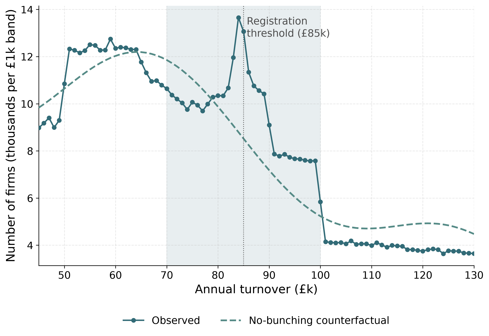
The behavioural fact in the literature is administrative. Liu et al. (2021) (hereafter LLAT) document genuine bunching at the UK VAT registration notch in HMRC micro-data over 2004–05 to 2014–15, during which the threshold rose from £58,000 to £81,000, with an excess-bunching ratio of \(b = 1.361\) (SE \(0.202\)) around the year-specific threshold and a manipulation window of \(-\unicode{xA3}14{,}000\) to \(+\unicode{xA3}24{,}000\). The synthetic baseline’s \(b_{\mathrm{LLAT}}=5.127\) is not a second estimate of their parameter: it is an unstable readback of the OBR target profile. What does carry across is institutional context: LLAT report that almost half (roughly \(43\%\)) of eligible below-threshold firms register voluntarily, which dampens observed bunching relative to a pure notch and which motivates the voluntary-retention sensitivity of Section 4. For wider order-of-magnitude context, Office for Budget Responsibility (2023) count firms holding turnover below the frozen threshold over a wide band (rising from \(23{,}000\) in 2017–18 to about \(44{,}000\) in 2025–26, with foregone turnover of £110m rising to £350m); this is a different object from a near-threshold spike and is cited only as context.
These results sharpen, rather than weaken, the case for grounding the policy analysis in structure. The reduced-form density around the threshold cannot price reforms—it has no single point of excess mass to forward-map onto a change in the shape of the schedule—and on band-calibrated synthetic data it cannot be read behaviourally at all, in either direction. What the structure of Section 6 does deliver exactly, for every reform considered, is the notch’s dominated region and how each schedule change alters it. It is precisely because the reduced-form bunching is non-identifying here that the exact dominated region carries the distortion characterisation. The behavioural layer that re-prices each firm’s turnover under counterfactual schedules—conditional on an assumed turnover elasticity—is developed in Section 7.
The behavioural response to the registration notch is documented in administrative data by Liu et al. (2021); the synthetic data contain no bunching signal to exploit (Section 5). To characterise the notch precisely I therefore turn to its analytic structure, which yields an exact distortion measure that needs no behavioural calibration. I set out the firm-level structure following Kleven and Waseem (2013), Saez (2010), and Kleven (2016), whose bunching framework Liu et al. (2021) adapt to UK VAT. The UK registration threshold is a notch, not a kink: once turnover crosses the threshold the firm becomes liable for VAT on its entire base, not merely on the increment above it. The section’s central deliverable is the notch’s dominated region—an exact, elasticity-free property of the schedule that indexes the distortion the threshold imposes (Section 6.2)—and its analytic response to each schedule reform, complementing the static reform costs of Section 4.1. Section 7 prices the intensive-margin response to each reform conditional on an assumed turnover elasticity; nothing in this section depends on that assumption.
The model prices the registration margin for firms that remit positive net VAT. Two populations are outside its scope and are treated as such throughout: below-threshold voluntary registrants (roughly 43% of eligible firms in (Liu et al. 2021)), who have chosen registration and so face no notch at the threshold, and net-repayment traders (zero-rated exporters and similar), whose remittance is negative for rated-structure reasons the generator does not represent (Section 3).
Each firm \(i\) chooses turnover \(y_i\) to maximise after-tax profit. Let \(c_i(y_i)\) denote the cost of producing turnover \(y_i\), \(T^{*}\) the registration threshold, and \(\tau\) the standard VAT rate. In the simplest statement VAT applies to the firm’s entire turnover once it registers, so after-tax revenue is discontinuous and profit is
\[ \pi_i(y_i) \;=\; \begin{cases} \;y_i - c_i(y_i), & y_i < T^{*} \quad \text{(unregistered)},\\[4pt] \;(1-\tau)\,y_i - c_i(y_i), & y_i \ge T^{*} \quad \text{(registered)}. \end{cases} \tag{1}\]
At \(T^{*}\) after-tax revenue falls discretely by \(\tau\,T^{*}\): a firm that nudges its turnover from just below to just above the threshold loses \(\tau\,T^{*}\) of net revenue on turnover it was already earning. With the standard rate \(\tau=0.20\) and threshold \(T^{*}=\unicode{xA3}85{,}000\) this discrete drop is \(\tau\,T^{*}=\unicode{xA3}17{,}000\) on whole turnover. Real VAT taxes value added, and the corrected data give each firm net liability \(v_i=\tau(y_i-x_i)\) with deductible inputs \(x_i=\delta_i y_i\) (Section 3); profit is then \((1-\delta_i)y_i - \tilde c_i(y_i)\) unregistered and \((1-\delta_i)(1-\tau)y_i - \tilde c_i(y_i)\) registered—the deductible share multiplies both branches, so the notch geometry of Equation 1 carries over firm by firm, with the cash size of the jump scaled to \(\tau(1-\delta_i)T^{*}\) (about £6,800 at the mean value-added share of 40%). This drop—absent from a kink, where only the marginal rate changes at the threshold while average liability moves continuously—is the defining feature of a notch: it makes locating just below the cutoff strictly attractive and creates the empty band derived next.
The notch creates a range of turnover just above \(T^{*}\) that no profit-maximising firm chooses under the model. A firm just below the threshold earns net revenue \(T^{*}\); a registered firm at \(T^{*}+a\) earns \((1-\tau)(T^{*}+a)\). Before these net revenues become equal, the registered firm receives less net revenue while producing more. Thus, for any non-decreasing production cost, it earns strictly lower profit; no locally constant-cost approximation is required. Equating net revenues defines the boundary of this guaranteed dominated region:
\[ (1-\tau)\,(T^{*}+a) \;=\; T^{*} \quad\Longrightarrow\quad a \;=\; T^{*}\,\frac{\tau}{1-\tau} . \tag{2}\]
This is the Kleven–Waseem guaranteed dominated-region width (Kleven and Waseem 2013). At my parameters it gives \(a = \unicode{xA3}85{,}000\times 0.20/0.80 = \unicode{xA3}21{,}250\), so the dominated region is \((T^{*},\,T^{*}+a)=(\unicode{xA3}85{,}000,\ \unicode{xA3}106{,}250)\), shown in Figure 7.
Two properties make this band a transparent index of the distortion. First, it is exact and elasticity-free, and—less obviously—invariant to the firm’s input share. Under the value-added formulation above, the indifference condition at the edge of the region is \((1-\delta_i)(T^{*}) = (1-\delta_i)(1-\tau)(T^{*}+a)\): the deductible share \((1-\delta_i)\) cancels, so every firm with positive value added faces the same dominated width \(a=T^{*}\tau/(1-\tau)\), whatever its input intensity. (A per-firm width built from the net remittance rate, such as \(T^{*}\tau_{0i}/(1-\tau_{0i})\), corresponds to a different technology in which marginal turnover carries no input cost, and is not used here.) The width depends on \(\tau\) and \(T^{*}\) alone—not on the cost specification beyond monotonicity, any behavioural elasticity, or any smoothing parameter. Who escapes the notch is a matter of scope, not of input shares (the invariance is a property of the formulation: unregistered profit carries the same deductible share, so no input VAT goes unreclaimed below the threshold; if deregistered firms instead bore VAT on their inputs, the width would shrink in the input share and vanish for shares above one half—the input-reclaim margin that drives voluntary registration, Section 2): voluntary registrants escape by choice, and net-repayment traders have no positive remittance to jump (the Scope paragraph above). Second, the region is an order of magnitude wider than the \(\sim\unicode{xA3}1\)k region implied by a smoothed kink approximation, and it spans a populous part of the firm distribution: about \(157{,}000\) weighted firms in the calibrated synthetic population lie in the \(\unicode{xA3}85{,}000\)–\(\unicode{xA3}106{,}250\) band (results/dominated_region_mass.txt). Because the generator has no location choice, this counts the firms the data place in the band—indexing the size of the population exposed to the distortion—rather than firms that optimally locate there; the count is conditional on the uniform within-band fill inside the coarse ONS bands (Section 3) and would shift under a different within-band shape. It is the width \(a\), not the count, that is exact.
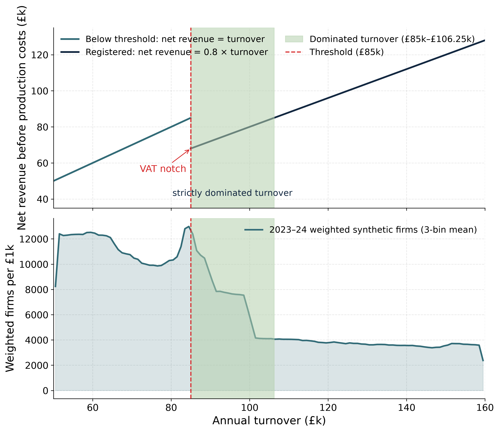
Because the width \(a=T^{*}\tau/(1-\tau)\) depends on the threshold and the rate alone, the effect of each schedule reform of Section 4.1 on the dominated region is exact and follows directly from the notch arithmetic of Equation 2 and Equation 3, with no dependence on the cost specification beyond monotonicity, any behavioural elasticity, or any simulated re-optimisation. Raising the threshold to £100,000 leaves the rate unchanged and therefore relocates the region without altering its width: it is the same £21,250 band, transported to the new cutoff. A banded reduced rate does not remove the distortion. It reduces the largest single notch—the jump at \(T^{*}\) falls from \(\tau T^{*}=\unicode{xA3}17{,}000\) to \(r\,T^{*}=\unicode{xA3}12{,}750\) at a \(15\%\) band rate—but, because the band reverts to the standard rate \(\tau\) at its upper edge \(T_{1}=\unicode{xA3}105{,}000\), it introduces a secondary notch there, and hence a second dominated region the simple “\(a\) shrinks with \(\tau\)” reasoning omits. The primary region at \(T^{*}\) (the band rate \(r\) on whole turnover) has the usual width \(a=T^{*}r/(1-r)\): \(\unicode{xA3}85{,}000\times0.15/0.85=\unicode{xA3}15{,}000\) at \(15\%\) and \(\unicode{xA3}85{,}000\times0.10/0.90=\unicode{xA3}9{,}444\) at \(10\%\). The secondary region at the band top—where the schedule steps from \(r\) back to \(\tau\) on whole turnover—has width
\[ a' \;=\; T_{1}\,\frac{\tau-r}{1-\tau}, \tag{3}\]
giving \(\unicode{xA3}105{,}000\times0.05/0.80=\unicode{xA3}6{,}562\) at \(15\%\) and \(\unicode{xA3}105{,}000\times0.10/0.80=\unicode{xA3}13{,}125\) at \(10\%\). The total dominated-turnover width is therefore \(a+a'=\unicode{xA3}21{,}562\) at \(15\%\) and \(\unicode{xA3}22{,}569\) at \(10\%\)—both marginally above the \(\unicode{xA3}21{,}250\) baseline, not below it. The reduced rate splits one wide empty band into two narrower ones rather than shrinking the total: it lowers the largest single notch (to \(\unicode{xA3}12{,}750\) at \(15\%\)) at the price of adding a secondary notch of \((\tau-r)\,T_{1}=\unicode{xA3}5{,}250\). The firm counts confirm this (results/dominated_region_mass.txt): the primary regions hold about \(111{,}900\) (\(15\%\)) and \(77{,}300\) (\(10\%\)) weighted firms, the secondary regions add about \(34{,}200\) and \(65{,}500\), and the totals—\(146{,}100\) and \(142{,}900\)—sit within \(3.3\%\) of the \(147{,}700\)-firm baseline band. A graduated taper, by contrast, can remove the dominated region entirely—provided its schedule keeps net revenue monotone, and that condition is restrictive. Any band-confined schedule whose effective rate reaches the full \(\tau\) by £105,000 leaves net revenue \((1-\tau)\times\unicode{xA3}105{,}000=\unicode{xA3}84{,}000\) at the band top, below the £85,000 available at the threshold itself, so net revenue must fall over some range inside the band—a smoothly dominated interval in place of the cliff. The taper costed here therefore phases the marginal remittance rate linearly from \(0\) to \(100\%\) over \([\unicode{xA3}85{,}000,\,T^{*}/(1-2\tau)]=[\unicode{xA3}85{,}000,\unicode{xA3}141{,}667]\): liability is continuous at both band edges, net revenue is non-decreasing throughout—its slope \(1-m(y)\) vanishes only at the band top—and the band of dominated turnover, with the discrete incentive to suppress turnover, is removed entirely. The price of removal is a wide band and a marginal remittance rate that reaches \(100\%\) at its top. On the dominated-region metric, then, only the taper removes the distortion; the reduced rate splits it and the level move relocates it. The metric indexes the misallocation distortion only—what it omits, and how the reforms compare on cost, is taken up in Section 8. The dominated region is the paper’s exact, elasticity-free measure of the distortion the notch imposes, and the analytic statement above is exactly how much of that distortion each reform of Section 4.1 removes.
The reforms of Section 4 are costed statically: each schedule is re-applied to a fixed turnover distribution, and the revenue change is the mechanical reclassification of firms with no response in turnover. Section 5 shows that the synthetic data contain no behavioural signal from which a response could be estimated, and Section 6 supplies the one object that needs no behavioural calibration at all: the exact dominated region. What is missing from this sequence is the behavioural layer itself—a costing that lets firms re-optimise turnover when a reform changes the effective rate they face. This section supplies that layer for an assumed turnover elasticity \(e\), reported as an \(e\)-sensitivity range rather than a point estimate, and nesting the static costing exactly in its \(e\to0\) limit. Its headline is deflationary, and usefully so: on the intensive margin the static costings are robust. A pure threshold rise has exactly zero intensive-margin revenue offset at every \(e\), and the reduced-rate bands’ offsets stay under \(6\%\) of the static cost across the sweep.
I adapt the iso-elastic model of Kleven and Waseem (2013), in the sufficient-statistics tradition of Saez (2010), writing the tax on value added rather than on turnover. (Liu et al. (2021) caution that turnover-tax bunching formulae do not carry to VAT unmodified, because input costs intervene; the value-added statement below is the adaptation this requires.) In this statement—formulation A—a firm of ability \(n_i\) chooses turnover \(y\) to maximise
\[ \pi_i(y) \;=\; (1-\delta_i)\,\bigl(1-\tau\,f(y)\bigr)\,y \;-\; C(y;n_i,e), \qquad C(y;n,e)=\frac{n}{1+1/e}\left(\frac{y}{n}\right)^{1+1/e}, \tag{4}\]
where \(\delta_i\in[0,1)\) is the firm’s deductible-input share of turnover, so that value added is \((1-\delta_i)\,y\); \(\tau\) is the statutory VAT rate; and \(f(y)\in[0,1]\) is the fraction of \(\tau\) that the schedule levies on the firm once registered (\(f=0\) below the threshold, \(f=1\) for a fully registered firm under the standard rate). Here \(e>0\) is the elasticity of turnover with respect to the net-of-tax rate.
It is essential to read \(C\) correctly. Because the deductible inputs \(\delta_i\,y\) are already netted out of revenue through the \((1-\delta_i)\) factor, \(C(y;n_i,e)\) must be understood as the firm’s own-factor production cost—the labour and capital effort the firm itself supplies—and not its total cost of production. Reading \(C\) as total cost would double-count the bought-in inputs, which the value-added factor has already removed. Marginal own-factor cost is \((y/n)^{1/e}\), so the undistorted optimum is \(y=n\): ability \(n\) is the firm’s frictionless turnover. A firm registered under a flat rate (\(f\equiv1\)) chooses
\[ y^{*} \;=\; n\,\bigl[(1-\delta)(1-\tau)\bigr]^{e}, \tag{5}\]
so the retained wedge facing the firm is the product \((1-\delta)(1-\tau)\) of the value-added share and the statutory net-of-tax rate, and \(\mathrm{d}\ln y^{*}/\mathrm{d}\ln\!\bigl[(1-\delta)(1-\tau)\bigr]=e\): \(e\) is exactly the knob that governs the intensive response. Figure 8 traces the formulation-A profit and its optima across the notch and taper schedules for three deductible shares.
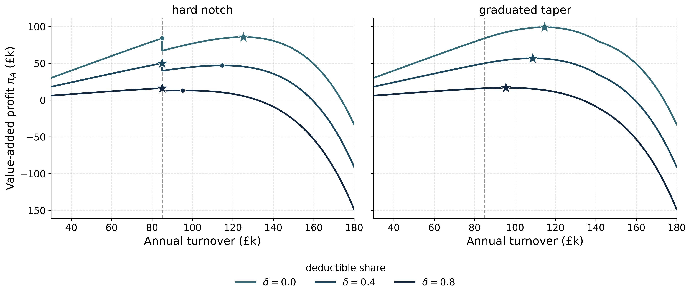
The reform costing needs each firm’s optimal turnover under a counterfactual schedule, given that its observed turnover is optimal under the baseline notch. Formulation A makes this a one-line object. Inverting Equation 5 at the baseline (fraction \(f_0\)) and re-solving at the reform (fraction \(f_1\) on the firm’s region of the schedule), the ability and the deductible share cancel in the ratio:
\[ y^{*}_i \;=\; y_{\mathrm{obs},i}\, \left(\frac{1-\tau f_1}{1-\tau f_0}\right)^{e}. \tag{6}\]
The intensive response depends only on \(e\), the statutory rate, and the schedule fractions—not on \(\delta_i\), not on the firm’s net remittance rate, and not on the recovered ability level. Ability recovery (\(n_i=y_{\mathrm{obs},i}\) below the threshold, \(n_i=y_{\mathrm{obs},i}/[(1-\delta_i)(1-\tau)]^{e}\) above) is an accounting anchor—it rationalises the observed allocation given \(e\) and reproduces the baseline by construction—but no reform number below depends on it.
The margin priced here is purely intensive: each firm re-optimises within the region of the reform schedule that contains its observed turnover, per Equation 6, clipped at its region’s edges. Relocation across a notch—bunching below a threshold from above, or de-registering past a band edge—is the extensive margin, which is the separate analytic object of Section 6 (the dominated region and the marginal buncher) and is deliberately out of scope: the synthetic data contain no information about it (Section 5), and pricing it would require assumptions about re-bunching dynamics the paper has declined to make. Confining the response to the firm’s own region also makes the \(e\to0\) limit collapse onto the static costing exactly, with no solver tolerance.3
The elasticity \(e\) is not identified from these data, so every behavioural magnitude below is conditional on the assumed \(e\), and the sweep is a sensitivity analysis rather than a set of forecasts. The sweep values \(e\in\{0.05,\,0.17,\,0.32\}\) are assumptions: \(0.05\) is the external anchor—Kleven and Waseem (2013) report lower-bound structural elasticities mostly in \([0.05, 0.15]\)—and \(0.17\) and \(0.32\) are chosen to span the range used in the threshold literature; the published UK VAT-base elasticities of Liu et al. (2021) (roughly \(0.09\)–\(0.14\)) fall between the anchor and the midpoint. A reader may substitute any preferred value directly. The robust, \(e\)-free headline objects remain the static costs of Section 4 and the dominated region of Section 6.
Table [tab:behavioural_costs] reports the behavioural cost of each of the three flat-rate reforms—the raised threshold and the two reduced-rate bands—measured as the change in revenue relative to the £85,000-notch baseline, alongside the static figure of Table 2, for each \(e\). For context, the marginal buncher \(n_H(e)\)—the highest ability that still finds bunching at the threshold optimal, the extensive-margin object held fixed here—sits at £112,795, £127,382 and £143,527 for \(e=0.05, 0.17, 0.32\).
Note. The graduated taper is omitted: its rate varies continuously with turnover, so its intensive response is outside the region-confined solve, and its marginal-rate channel is not represented by the flat-rate first-order condition. Its \(e\)-free figures—the static cost of \(-\)£1,525m and the exact removal of the dominated region—are in Sections 4 and 6.
The raise-to- £100,000 row is identical to its static cost at every \(e\), and this is a result, not a failure to respond. Partition the firms. Those with observed turnover below £85,000 face \(f=0\) before and after; nothing changes. Those released by the raise (\(y_{\mathrm{obs}}\in[\unicode{xA3}85\text{k}, \unicode{xA3}100\text{k})\)) see their rate fall to zero and expand per Equation 6 by the factor \((1-\tau)^{-e}\) (about \(+3.9\%\) at \(e=0.17\))—but their expansion is untaxed: they have left the VAT base, so the revenue loss is their full baseline remittance, exactly the static figure. Those above £100,000 face \(f=1\) before and after; nothing changes. The only candidates for a taxed response are released firms whose expansion would carry them across the new threshold, and for every such firm the new notch’s bunching condition binds (its ability lies strictly below the new marginal buncher), so it optimally stops at the threshold and remits nothing. Base broadening from a threshold rise is therefore real economic activity but generates no VAT: conditional on this model, the static costing of a level move is not an upper bound that behaviour erodes—it is the behavioural costing on the intensive margin. The simulator asserts this invariance programmatically (to £0.1m at each swept \(e\)).
A reduced-rate band lowers the rate on band firms from \(\tau\) to \(r\), so each scales up by Equation 6 with \(f_1 = r/\tau\): about \(+2.0\%\) at the \(10\%\) rate and \(e=0.17\), and about \(+1.0\%\) at \(15\%\). Remittance scales with turnover, so the offset is roughly the scale gain times the band’s (rate-reduced) remittance—about £10m against a static £515m at \(e=0.17\) for the \(10\%\) band, reaching about £18m only at \(e=0.32\). The direction is uniform—a larger \(e\) makes the bands slightly cheaper—but the magnitude never approaches the static term. Figure 9 traces the costs across the full range of \(e\): the raise is exactly flat, the bands nearly so.
Three properties are asserted programmatically in the released code on every run: the baseline solve reproduces each firm’s observed turnover exactly (the accounting anchor is internally consistent); the \(e\to0\) behavioural cost equals the static cost to £0.1m for every priced reform; and the solved response satisfies \(\mathrm{d}\ln y^{*}/\mathrm{d}\ln(1-\tau f)=e\) to machine precision. The static costing is thus the \(e=0\) corner of the same machine, not a separate calculation.
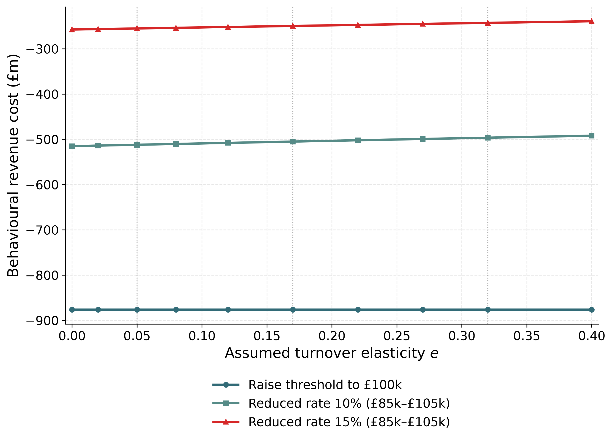
This section completes the costing framework, and its contribution is a robustness statement. Where Section 4 prices each reform mechanically and Section 6 measures the distortion each removes, the intensive-margin layer shows that naming an elasticity barely moves the static numbers: not at all for a level move, and by under \(6\%\) for the reduced-rate bands. The behavioural uncertainty that could move these costings materially sits on the extensive margin—registration, de-registration, and location choice at the notch—which the synthetic data cannot identify and which this paper prices only through its exact analytic geometry.
This paper contributes an open, auditable firm-level accounting microsimulation for analysing the UK VAT registration threshold, released in full—including its synthetic-data generator—for replication. Its value is as transparent policy-scenario infrastructure rather than a structural identification result: I make no claim to recover policy-invariant firm primitives, unlike Garicano et al. (2016) and Gourio and Roys (2014). The analysis is anchored to the 2023–24 data year, in which the statutory threshold was £85,000, with a second 2024–25 population (threshold £90,000) for the forward sweep. Table 3 collects the headline objects.
| Object | Symbol / definition | Value | Source |
|---|---|---|---|
| Static cost, £85k to £90k anchor | dereg. / retention conventions | \(-\unicode{xA3}364\)m / $-2 | 07$m Section 4 |
| Static sweep, £90k baseline | £70k to £120k | \(+\unicode{xA3}1.46\)bn to $-\unicode{xA | 3}1.55$bn Table 1 |
| Dominated region | \(a=T^{*}\tau/(1-\tau)\) | £21,250 | Section 6.2 |
| Firms in the dominated band (weighted) | — | \(\approx157{,}000\) | Section 6.2 |
| Raise to £100k, static and behavioural | invariant in \(e\) | \(-\unicode{xA3}876\)m | Sections 4, 7 |
| Graduated taper $[85,141.7] | $, static — | \(-\unicode{xA3}1{,}525\)m | Section 4.1 |
On the common £85,000 baseline, raising the threshold to £100,000 costs £876m, the graduated taper costs £1,525m across its wider £85,000–£141,667 band, and the 10% and 15% reduced-rate bands cost £515m and £258m. The anchor reform still overshoots HMRC’s published costing under both deregistration conventions, so it is an internal consistency check rather than external validation.
The notch creates an exact £21,250 dominated region. Raising the threshold relocates it, and a reduced-rate band divides it between two notches; only the continuous taper removes it. Intensive-margin responses change the reduced-rate costings only modestly under the assumed elasticities, while a threshold rise has no intensive-margin revenue offset in this model.
The bunching exercise supplies a methodological warning, not a behavioural estimate. Its 2023–24 profile is inherited from OBR calibration targets, its degree–window estimates are unstable and fitted missing mass is zero. The administrative evidence in Liu et al. (2021) therefore remains the relevant evidence on firm behaviour.
The model omits location choice, voluntary-registration choice, compliance costs, sectoral incidence, pass-through, and general-equilibrium effects. It also cannot capture persistent growth effects extending beyond the cutoff, as documented for a different payroll-tax notch by Jysmä et al. (2026). Those estimates do not transfer directly to UK VAT. Administrative firm-level validation, an explicit registration model, and welfare accounting are the main priorities for future work.
This appendix collects supporting material in two parts: data construction and calibration robustness (Appendix 9.1); and statistical inference for the reduced-form bunching results (Appendix 9.2), including the specification-sensitivity grid establishing that band-calibrated synthetic data cannot support bunching inference in either direction.
Section 3 describes the two-stage synthetic-population pipeline, parameterised by the registration threshold, and its calibration to HMRC and ONS aggregates. This appendix records the implementation detail deferred from that account.
Each of the approximately \(2.94\) million firm rows carries a turnover, an input expenditure, a net VAT liability (\(v_i = 0.20\,(y_i - x_i)\)), a calibration weight, and a registration status; the weights are chosen so the weighted totals reproduce the official targets while the population sums to about \(2.5\) million firms. Because the population is calibrated to the HMRC aggregates, agreement between my weighted outputs and those aggregates is a check of internal consistency, not external validation: any target used in calibration is reproduced by construction. The headline calibration accuracies (92.9% and 93.5% for the two vintages) and the anchor comparison of Section 4 are therefore consistency checks on the pipeline, not out-of-sample tests of firm behaviour.
The reported calibration score is a bounded summary statistic. For each dimension I compute \(\max\{0,1-\lvert \widehat{T}-T\rvert/\lvert T\rvert\}\), so a dimension missed by more than 100 percent receives zero rather than a negative score. The headline “overall” number is the unweighted mean of the five dimensions used as calibration targets—HMRC turnover bands, ONS population, employment bands, HMRC sector counts, and VAT liability by turnover band. VAT liability by sector is excluded from that mean and reported separately as an informational diagnostic, because the current generator does not calibrate sector-specific input/output VAT structure.
The replication report also publishes the calibration-weight minimum, median, upper quantiles, maximum, coefficient of variation, and Kish effective sample size. These diagnostics matter because aggregate target agreement can coexist with a small number of influential synthetic records. The report is generated rather than transcribed, and the test suite verifies source-band support, sector-conditional employment assignment, and weighted voluntary registration.
The official target tables are being moved into PolicyEngine Ledger, with Populace providing the shared synthetic-population generator. I therefore keep the paper’s archived processed CSVs as the reproduction source for the reported results, and treat the pinned Populace/Ledger path as an auditable migration check rather than a silent replacement. The snapshot used here is PolicyEngine/ledger pull request 67 at commit cd98b5c and PolicyEngine/populace pull request 223 at commit fa20daf; both upstream pull requests merged on June 30, 2026. For the 2024–25 vintage, the Ledger-backed targets match the paper’s processed numeric inputs exactly after dropping presentation-only labels, totals, and the HMRC “Unknown” column that the generator does not calibrate: six normalized source tables checked, zero mismatches, and maximum numeric difference zero. (The “2024–25 vintage” here denotes the HMRC/ONS statistical release labelled 2024–25, the same target tables the paper’s 2024–25 population calibrates to.) A 1,000-iteration Populace run from those targets generated 2,946,015 firm rows; its validator reported a 93.8 percent overall score against the paper validator’s then-90.5 percent, a comparison that is not like-for-like (different band sets and sector-target definitions). Two caveats now attach to that pinned snapshot. First, it predates this paper’s net-liability correction (Section 3, footnote): both generators at the pin date shared the mis-scaled \(v_i = y_i - x_i\) convention, so the experimental Populace firm generator inherits the same defect, which I have reported upstream; the target-parity result (zero mismatches) is unaffected, since it concerns the input tables, not the generated population. Second, the paper validator’s scores on the corrected build are 92.9 percent (2023–24) and 93.5 percent (2024–25). The comparison table and structured provenance are reproduced by firm-microsim-populace-ledger and checked into and .
The no-VAT counterfactual density of Section 5 is fitted by polynomial regression on the observed density outside a manipulation window around the threshold. The baseline excludes \([T^{*}-15\text{k}, T^{*}+15\text{k}]\) and fits a degree-7 polynomial. Widening the window guards against contamination of the counterfactual by the behavioural response but reduces the data available for the fit; raising the degree improves in-sample fit but risks over-fitting the tails. The sensitivity of the excess-mass and bunching-ratio estimates to window width and degree, with associated uncertainty, is reported in Appendix 9.2.
This appendix documents the inference procedure for the reduced-form bunching results of Section 5: the mass-conservation constraint that disciplines the counterfactual density, why no standard errors are reported, sensitivity to the polynomial degree and exclusion window. All numbers are produced by the released estimator run on the regenerated weighted synthetic 2023–24 population; the retained machine-readable artifact is . The estimator reports the geometry only—the bunching ratio \(b\), its Liu et al. (2021)-normalised counterpart \(b_{\mathrm{LLAT}}\), the excess mass \(E\), and the mass-conservation objects (\(\Delta_R\), \(y_R\))—and computes no elasticities: the mapping from excess mass to an elasticity is not identified without functional-form assumptions (Blomquist et al. 2021; Bertanha et al. 2023), and on these data there is no behavioural mass to convert in the first place.4
The canonical bunching estimator of Chetty et al. (2011) and Kleven and Waseem (2013) imposes that the counterfactual density conserves mass: every firm removed from above the threshold reappears as excess mass below it. An unconstrained polynomial fit on bins outside a hand-set window computes the excess mass \(E\) (below \(T^{*}\)) and the missing mass \(\Delta_{R}\) (above \(T^{*}\)) independently, with no guarantee that \(E=\Delta_{R}\) and no endogenous location of the marginal buncher. I impose the constraint in two ways. First, the counterfactual polynomial in \((y-T^{*})\) is fit by an iterated procedure in which the density of the bins above the excluded region is rescaled until the fitted counterfactual integrates to the observed total mass over the estimation range \([\unicode{xA3}20\text{k},\unicode{xA3}140\text{k}]\) (the regressor is normalised to \([-1,1]\) for numerical stability of the high-degree basis). Second, the upper edge of the manipulation region—the marginal buncher \(y_{R}\)—is located endogenously by integrating missing mass upward from \(T^{*}\) until it equals the excess mass below, \[\int_{T^{*}}^{y_{R}} \bigl[f^{\mathrm{cf}}(y)-f^{\mathrm{obs}}(y)\bigr]_{+}\,dy \;=\; \int_{T^{*}-W}^{T^{*}} \bigl[f^{\mathrm{obs}}(y)-f^{\mathrm{cf}}(y)\bigr]_{+}\,dy \;=\; E .\] On the 2023–24 population the baseline gives \(E=10{,}418\), \(\Delta_R=0\), and \(y_R=\unicode{xA3}100\)k, the search cap. These mass-conservation outputs are estimator diagnostics, not evidence of a marginal behavioural buncher.
Earlier drafts attached bootstrap standard errors to the bunching statistics (resampling firm rows with replacement and re-running the estimator). Those numbers are not reported anywhere in this paper, because the exercise has no estimand: the synthetic file is a deterministic construction from published targets, not a sample from a population, and row-resampling dispersion scales as \(1/\sqrt{n}\) in a row count the analyst chooses. A standard error that can be made arbitrarily small by generating more synthetic rows conveys precision that does not exist. The specification grids below instead show how point estimates move with the estimator’s own choices. Generator Monte Carlo error is quantified separately, by rebuilding the full 2023–24 population under alternative generator seeds (results/seed_sensitivity.txt): across seeds the half-ranges are \(\pm111\) on \(E\), \(\pm0.07\) on \(b_{\mathrm{LLAT}}\), \(\pm\unicode{xA3}1.4\)m on the raise costing, \(\pm\unicode{xA3}0.3\)m on the taper costing, and \(\pm\unicode{xA3}0.03\)bn on the registered base. Table 4 reports the point estimates. Two conventions matter for reading them. Bins are centred on integer £k values (edges at half-integers), so the bin containing the threshold spans £84.5k–£85.5k and its mass is attributed to the above side, attenuating \(E\) and \(\Delta_R\) relative to edge-aligned binning. And \(E\) sums the positive part of the observed-minus-counterfactual gap in the excluded window below the threshold, so the statistic reads gross rather than net excess.
| Vintage | \(E\) | \(\Delta_R\) | \(b_{\mathrm{LLAT}}\) | \(y_R\) (£k) |
|---|---|---|---|---|
| 2023–24 (£85k, OBR fine targets) | \(10{,}418\) | \(0\) | \(5.127\) | \(100.0\) |
Table entries for a grid of polynomial degree \(\in\{5,6,7,8\}\) and symmetric exclusion window \(\in\{\unicode{xA3}10\text{k},\ldots,\unicode{xA3}25\text{k}\}\) are in results/bunching_inference.txt; the pattern matters more than the cells. In the 2023–24 grid, \(E\) ranges from zero to about \(25{,}100\) firms and \(b_{\mathrm{LLAT}}\) from zero to about \(8.98\). This specification sensitivity, together with the absence of a location-choice mechanism in the generator, precludes interpreting the baseline as a behavioural estimate.
These aggregates are weighted sums of the synthetic registered population’s net VAT liabilities aged forward—a theoretical-liability (VTTL-style) base, not the published cash-receipts line (around £169bn in 2023–24; OBR forecast near £180bn for 2025–26), which is reduced by refunds, the VAT gap, and collection timing. The unaged bases are £175.4bn in 2023–24 and £181.0bn in 2024–25. The multi-target optimiser trades liability totals off against count targets; the liability-by-band calibration scores (96.5% and 97.1%) summarise the remaining discrepancy. Band-to-band differences, which drive every costing in the paper, are less exposed than the level. The growth factors are cumulative from 2023–24 and are applied to both vintages; to the extent the 2024–25 vintage already embodies 2024–25 nominal levels, the aged 2024–25 aggregates overstate nominal growth by up to one year’s factor (\(\approx\)3%), within the calibration error just described.↩︎
The defect and its diagnosis are recorded in the replication repository (issue #15); the near-threshold targets are issue #23. A second correction followed: the below-threshold HMRC liability total, which belongs to voluntary registrants the liability model does not represent, was initially calibrated against the whole below-threshold population, draining weights around the fine-target window; on an intermediate build it also manufactured a spectacular (\(E\approx196{,}000\)), specification-robust artifact at the £90,000 band edge. It is now an informational diagnostic (Section 3). Aggregate calibration scores barely moved under any of these changes—the optimiser hit the band totals every time—which is itself part of the lesson: aggregate fit does not discipline sub-band shape.↩︎
An earlier version of this simulator computed the registered optimum by damped fixed-point iteration on the discontinuous schedule. For any firm whose ability straddles a reform notch that iteration has no fixed point—the iterate oscillates across the notch and the reported turnover is an artifact of the iteration count. The reported behavioural offsets in the earlier draft (for example \(-\unicode{xA3}292\)m against a static \(-\unicode{xA3}508\)m for the raise at \(e=0.17\)) were dominated by this artifact. The corrected, region-confined solve is closed form; the replication repository documents the change.↩︎
Earlier versions of the estimator also printed a CES substitution elasticity and two wedge-normalised turnover elasticities, the latter inheriting an ad hoc \(\tau/2\) normalisation from a deleted smoothed-schedule model. These outputs were labelled non-identified but were still reported; they have been removed from the code and the paper.↩︎